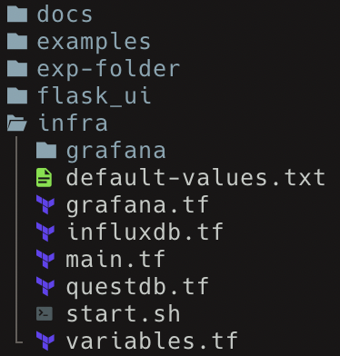
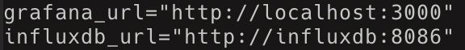
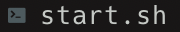
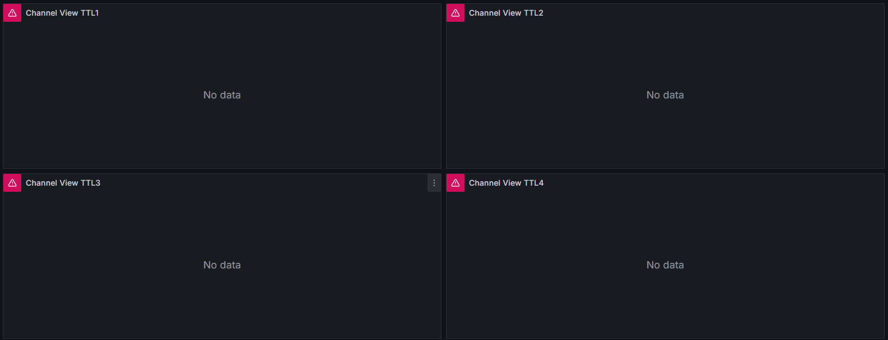
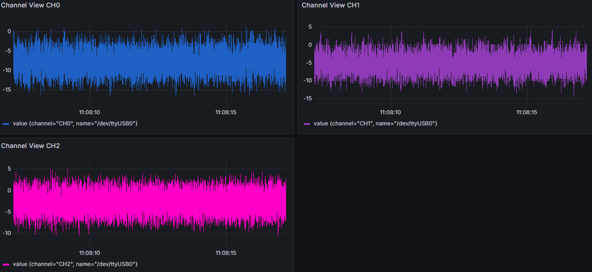

Visualizing Data During Streams 😎
The Terraform Automation 🗻
If you downloaded Morelia directly from the GitHub page, you’ll have access to visualize the data streamed to the InfluxSink and QuestSink through Grafana.
- In order to do so, you’ll need to download both Terraform and Docker to create containers for both the data source (Influx or Quest) and Grafana. The downloads can be found at the links below, or if you are on bash, you can follow the Bash Shell Script 📜
section to quickly download and setup the architecture.
Once downloaded, inside of the ‘infra’ directory, you will see a file named default-values.txt. You will need to copy this to a file named terraform.tfvars. This step is not required if you are following the bash shell script section.

Important
Below we have steps to help you install Terraform and Docker if you are on a Linux system. If you are on Windows, you’ll need to install Docker Desktop in order to run Grafana and InfluxDB. You can follow the steps on Docker’s Website to install the service!
You can use terraform init to initialize the Terraform configuration, and terraform apply to begin the infrastructure. By default, the Influx database is on localhost:8086 and Grafana is on localhost:3000.

In the case that you come across an error in creating the infrastructure, you can use terraform destroy to remove the architecture, or terraform restore to update the configuration state.
Bash Shell Script 📜
For ease of use, we have included a bash shell script that downloads Terraform and Docker, and then uses them to create containers for a datasource of your choice and Grafana. You can find the bash script inside of the ‘infra’ folder.

This script can be reused to start Grafana whenever needed. It will not re-install Terraform or Docker.
Grafana Dashboards 💡
To see the dashboard, go to a web browser and go to localhost:3000. On the lefthand side, there is a “dashboard” tab. Upon clicking this, you’ll see two sample 8206 dashboards, one for InfluxDB and one for QuestDB.

Upon clicking either of them, you may see that there’s no data. By default, the dashboards are looking at the last 10 seconds of data and query every 5 seconds. If you aren’t currently streaming to the database that is being queried, then nothing will appear!

The Stream Appears 🤯
By default, the classes QuestSink and InfluxSink are set to automatically stream to a database that is accessed by Grafana’s queries in the dashboards provided. These can be changed, but will require you to create your own dashboard (or edit the one provided) to query from that database.
If you want more details on editing Grafana dashboards, visit this section Creating Grafana Dashboards 📉
The setup of streaming to the dashboard is similar to that of the previous page:
# Import the proper class.
from Morelia.Devices import Pod8206HR
from Morelia.Stream.sink import InfluxSink
from Morelia.Stream.data_flow import DataFlow
# Connect to an 8206HR devices on on /dev/ttyUSB0-2 and set the preamplifer gain to 10.
pod_1 = Pod8206HR('/dev/ttyUSB0', 10)
# Change the sample rate of pod_2 to be 1300 Hz.
pod_1.sample_rate = 1300
# Create InfluxDB Sinks.
influx_sink_1 = InfluxSink(pod_1)
# List that defines how sources map to sinks.
mapping = [(pod_1, [influx_sink_1])]
flowgraph = DataFlow(mapping)
flag = False
with flowgraph:
while True:
if flag:
break
Upon running this python script, you should see data appear on your dashboard!
